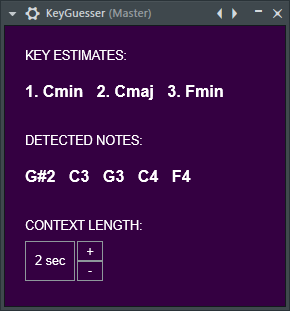

Highly accurate pitch and key detector designed to work with any audio. Runs as VST3/AU audio effect plugin for Windows and MacOS.
Download for Windows (.msi) | Download for MacOS (.pkg)
Polyphonic pitch detection via a C implementation of the MuScriptor neural net.
Detected notes are used to estimate key with the Krumhansl-Schmuckler key-profile correlation method.
Built using the JUCE framework and static builds of ONNX Runtime.
This project is part of an ongoing effort on the CounterTune audio effect, a generative delay plugin! © Sava Solar 2026